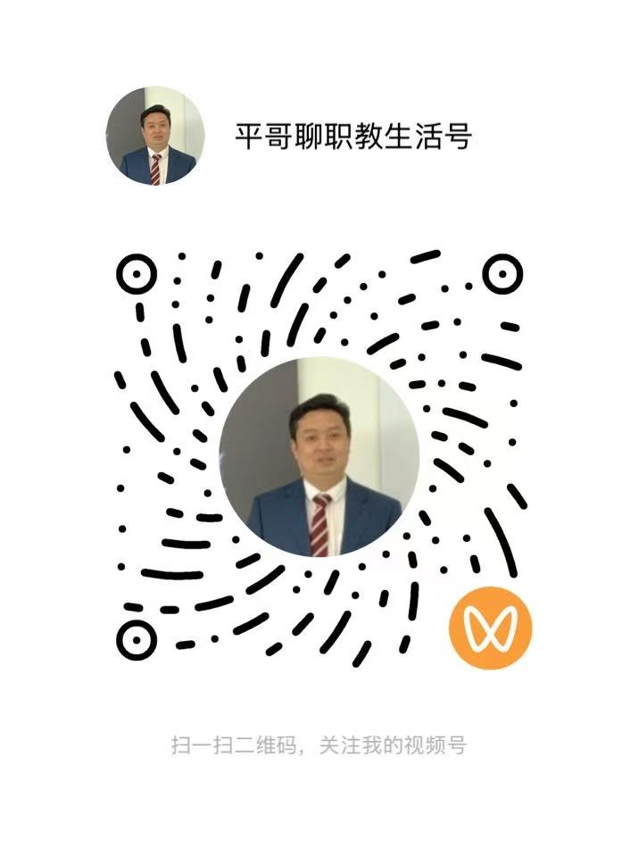

二级学院院长最头疼的“躺平”老教师，骂不得、供着没用，得用这招“借力打力”
如果你在二级学院当过院长，或者正在当院长，那你几乎不可能没遇到过这样一类人：资历很深、年纪不小、过往也做过贡献，现在不出大错，但也不再承担任何关键任务；你心里清楚，学院很多事推进不下去，和他脱不开关系，但你又很清楚——这……


CONTENT CENTER
上层精选代表文章与行业观点；下层集中展示两个视频号和两个公众号，扫码即可持续获取完整内容。
01 / 代表文章
如果你在二级学院当过院长，或者正在当院长，那你几乎不可能没遇到过这样一类人：资历很深、年纪不小、过往也做过贡献，现在不出大错，但也不再承担任何关键任务；你心里清楚，学院很多事推进不下去，和他脱不开关系，但你又很清楚——这……
这几年，职业教育的呼声越来越高，政策越来越密，投入越来越大。但我们却看到一个奇怪的现象：中职在搞升学，高职在搞申报，……
重点校，为何“走得越快，摔得越重”？这是一所省级重点职校，硬件一流，师资充足，地市支持力度也大。三年前，学校提出“融合优先战略”，校长亲自挂帅，签下12份企业协议，成立“融合推进办公室”，先后申报4个省级项目。……
牌照许多，能跑起来的寥寥无几如今，职业院校挂产业学院的热情很高，几乎成为标配。但真正能“跑起来”、深度融合校企资源、发挥持续效能的案例却不多。问题不在“有没有建”，而在于“有没有运营”。……
——产业学院最常犯的11个致命错误（深度解析版）这几年，“产业学院”几乎成了职业教育的标配。不建，好像就跟不上时代；……
过去两周，我密集走访了全国范围内的50多所高校与企业,围绕“产教融合”的推进情况进行了系统性诊断。原本的任务是识别问题并提出建议，但调研越深入，我越意识到：……
‘复旦大学从专业向项目转型的启示’在传统教育体系中，“学科为纲、课表为王”，但走向岗位时才发现——“专业很响，岗位不认；知识很多，就是不会干。”……
“现在都升学了，还搞什么产教融合？”这是很多中职老师和校长，内心真实的疑问。一个班90%的学生都要升学，……
02 / 微信内容矩阵
视频号适合观看短视频与直播；公众号适合系统阅读文章与专题内容。
政策、趋势与职教观察

直播、交流与实践分享
代表文章与原创观点
项目、企业与运营方法
从问题开始，向成果推进